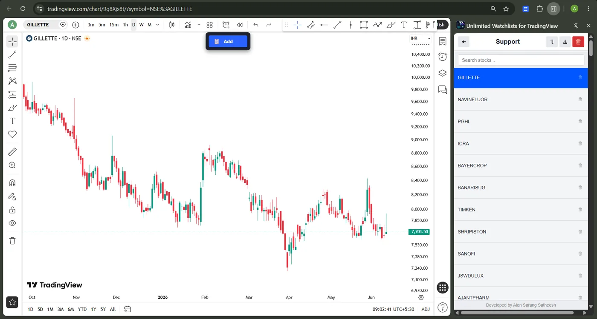
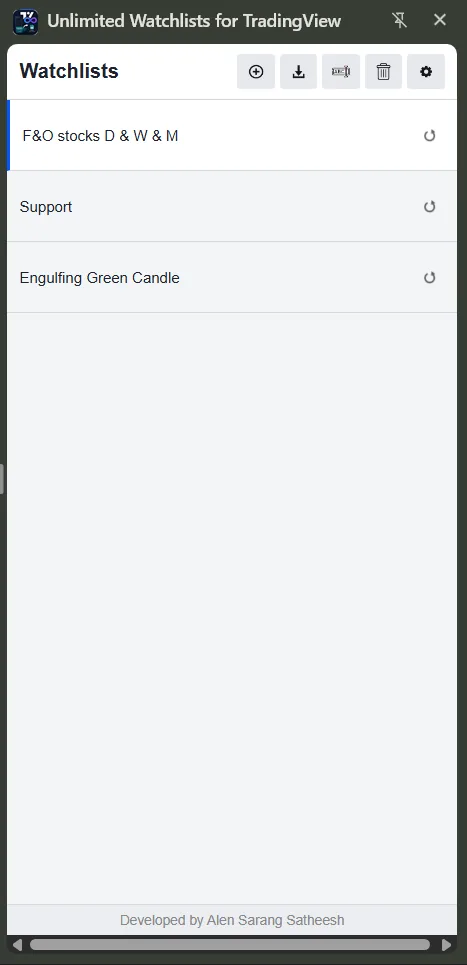

Home › Guides
TradingView watchlists: the complete guide
Updated August 11, 2026
Short version: TradingView's free plan lets you keep only one watchlist, with a cap on symbols; more lists cost more money. But because a watchlist is really just a set of symbols you want to chart, you can keep unlimited watchlists for free in a browser side panel and still open every chart on TradingView with one click. This guide covers the limits, the free workaround, and how to fill and organize lists fast — with links to a step-by-step guide for each workflow.

What a TradingView watchlist actually is
A watchlist is just a named group of symbols you want to keep an eye on and chart quickly. On TradingView, lists live inside your account and sync across devices — which is convenient, but it's also why the number you can keep is tied to your plan. The moment your process grows past a single list, that coupling becomes the bottleneck.
How many watchlists can you have? Free vs paid limits
TradingView's free (Basic) plan is designed to be tight: in practice you get one watchlist, with a limit on how many symbols it holds. Paid tiers raise both numbers step by step, with the roomiest limits reserved for the top plans. The exact caps have shifted over the years, so treat TradingView's pricing page as the source of truth for today's numbers — but the structure never changes: more watchlists cost more money.
If you want the full breakdown of the caps and every way around them, see the dedicated guide: the TradingView watchlist limit, explained.
How to get unlimited watchlists for free
The workaround is to stop storing your lists inside your TradingView account. Unlimited Watchlists for TradingView is a free Chrome extension that keeps any number of watchlists in Chrome's side panel, sitting beside whatever tab you're on. Click a symbol and it opens or switches that chart on tradingview.com; press Space to cycle through the whole list. Because the lists live in the extension rather than your account, the plan limit simply never applies — and it behaves the same on the free plan as on paid ones.
Why this is allowed: the extension doesn't modify TradingView or unlock any paywalled charting feature — it opens standard chart URLs, exactly like clicking links from a spreadsheet. Everything is stored locally in your browser; no account, no analytics, nothing leaves your device. See the privacy policy.
How to fill your watchlists fast
Typing symbols by hand doesn't scale. There are three quick ways to load a list:
- From a Chartink screener — one click imports an entire scan's results as a list named after the screener, and it remembers the URL so you can re-sync tomorrow's results instantly. Read the Chartink → TradingView guide.
- From a CSV file — bulk-import symbols exported from a broker, screener, or spreadsheet in seconds. Read the CSV → TradingView guide.
- From any TradingView page — a floating "Add to Watchlist" button saves the symbol you're viewing to any of your lists, without leaving the chart.

How to organize watchlists that scale
Once lists are effectively free, the winning move is one list per decision rather than one giant catch-all. Most active traders end up with a list per strategy (breakouts, pullbacks, 52-week highs), per sector, per timeframe, and per screener run — and if you scan Indian markets with Chartink, every scan is naturally its own list. Clear names ("NIFTY-breakout-daily") keep the panel scannable as it grows, and sorting, filtering, and drag-to-reorder keep each list tidy.
Work through your charts faster
A watchlist is only as good as how quickly you can chart it. Click any symbol in the side panel to load its chart, then tap Space to jump to the next — so reviewing a fifty-name scan becomes a few seconds of tapping rather than a copy-paste marathon. Combine that with a sorted or filtered list and you can rip through an entire sector in one sitting.
Free vs paid: is upgrading worth it?
Upgrading TradingView is the simplest path and it supports a platform you rely on — worth it if you also want its advanced charting, more indicators per chart, or alerts. But if the only reason you're eyeing a paid plan is to escape the watchlist cap, a free side panel solves exactly that one problem without the subscription. And whatever you do, steer clear of "cracked" or "nulled" TradingView builds: they're a common vector for malware and account bans, and they don't get you anything the legitimate free route above doesn't.
Frequently asked questions
How many watchlists can you have on TradingView?
The free plan is limited — in practice one watchlist with a symbol cap. Paid tiers raise the number of lists and symbols, with the most generous limits on the top plans. The exact caps change over time, so check TradingView's pricing page for current numbers.
Can you get unlimited TradingView watchlists for free?
Yes. A Chrome side-panel extension stores any number of watchlists in your browser, outside your TradingView account, and opens any chart on TradingView with one click — so the plan's watchlist limit never applies, on the free plan or any paid one.
Do browser-based watchlists sync to the TradingView mobile app?
No. Lists kept in a browser extension stay on that device and don't sync into the TradingView mobile app. You can export a list to CSV and import it on another machine, but there's no cloud sync — which is also why nothing about your lists ever leaves your device.
Is using a watchlist extension against TradingView's rules?
It doesn't modify TradingView, bypass any paywalled charting feature, or automate your account. It simply opens normal TradingView chart URLs when you click a symbol — the same as clicking links from a spreadsheet, only faster.
Related guides
- TradingView watchlist limit: caps & the free workaround
- How to import a Chartink screener into TradingView
- How to import a CSV watchlist into TradingView
Your watchlists, without the limits
Free, private, and one click away from your next chart.
Add to Chrome — Free